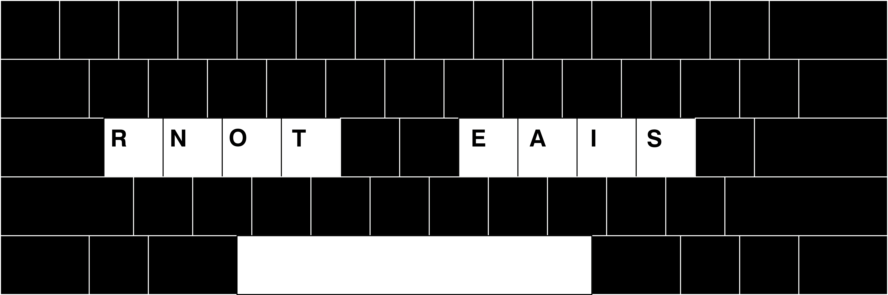

EAIS: A 9-key keyboard
Following my obsession with keyboard layouts, I made a layout which uses 9 keys.Contents
Specification
The layout can be used on a standard keyboard using the following map: Each of the 8 letter keys types its respective letter upon being pressed, and again upon being released. For example, to type "INN", the I key is pressed and held whilst the N key is pressed and released.
The space-bar inserts a space, but also flags all currently held letter keys to be ignored on their next release. After typing "INN" and hitting space, the user is free to release the I key without an extra I being typed. This transforms each word into a sort of gesture, involving having multiple keys pressed simultaneously.
To type the remaining 18 letters of the alphabet, a series of substitutions are employed. In the following table, the Input is substituted with the Result.
| II | -> | H | AO | -> | L | AE | -> | D | ||
| AA | -> | C | TN | -> | U | NR | -> | M | ||
| OE | -> | F | SR | -> | G | SN | -> | P | ||
| NN | -> | W | OI | -> | Y | RR | -> | B | ||
| OA | -> | V | RN | -> | K | IA | -> | J | ||
| OO | -> | X | IR | -> | Z | IE | -> | Q |
The earlier example with the word "INN" is deceptive. Trying to type "INN" would output "IW". The burden of later deciphering these ambiguities is placed on the writer. A more advanced system could implement a spellchecker to relieve this burden.
Design Intent
I wanted to make a digital input system similar to steno-typing, used in court rooms. The idea was to enable the user to take real-time notes at a speed that would let the writer record live speech word for word. I've been wanting to learn such a system myself, but my laptop keyboard doesn't support the level of rollover needed to use steno-typing software such as Plover.
I tried to make a speedy input method compatible with keyboards capable of detecting all 8 keys under the home-row plus the space bar. The intent was to enable the user to type without laterally moving their fingers across the keyboard, but instead only pressing and releasing the same 9 keys.
I factored in the English alphabet, and the relative frequencies of letters in common writing. The "RNOT EAIS" selection of letters consists of the 8 most frequent English letters placed alternating on each side from the center outward, with the intent being factoring the greater strength of the index and middle fingers compared to the pinkies.
The choice of substitutions was based on a ranking of the frequencies of two-letter pairs in written English. Out of the pairs available with "RNOT EAIS", I chose the 18 least common, to minimize the impact of making these letter pairs inaccessible by replacing them with other letters.
I placed the least frequent letters like Q and Z with the most frequent letter pairs like IE and IR. This is because these letter pairs are more likely to be replaced when the user actually intended to type the pair itself, and uncommon letters like Q and Z are easier to spot and decipher. If the user types "INN" but it becomes "IW", it's easier to know what was meant to be typed, as opposed to it spelling a different valid word like "IF".
Source Code
I wrote a C program for Linux/X11. It can be compiled with the command "gcc eais.c -o eais -lX11".
A blank window is opened; it must be focused in order to receive input. The true output is on the command line from which the program is invoked.
This implementation includes backspace, immediate substitution upon the space-bar being pressed, and a timer displaying the number of seconds elapsed between each time the Enter key is pressed.
Click here to view the source.